İlk Karşılaşma
Seni ilk gördüğüm an, dünya bir anlığına sustu. Sanki kalbim ne zamandır seni beklediğini ancak o saniyede hatırladı. O bakış, bütün yalnızlığımı bir kalemde sildi.
Bu özel sayfaya erişmek için şifreyi gir sevgilim... ❤️
1. Ay
SEVGİLİ EBRU'YA · BİRİNCİ AY
Bir bakışta başladı,
her günde biraz daha derinleşti...
TAMAMLANAN İLK AY
Seninle her şey daha güzel görünüyor. Sabahlar daha aydınlık, geceler çok daha huzurlu. Bir ay geçti ve her geçen günle birlikte, seninle olmak bir öncekinden daha anlamlı hale geliyor.
Aşk, küçük anlarda saklıdır.
Sen bana her küçük anı büyük hissettirdin.
23 NİSAN - 23 MAYIS 2026
Tamamlandı · 30 Gün
Bölüm I
Zamanın durduğu o küçük kareler...
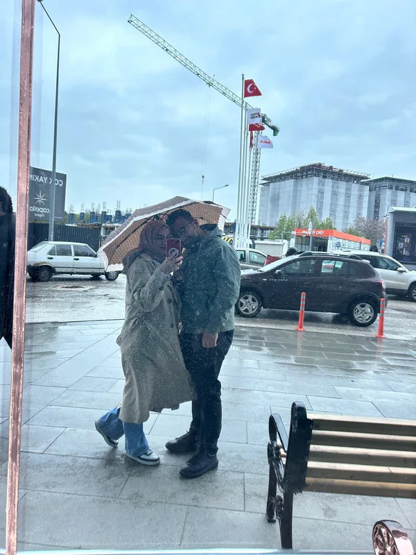

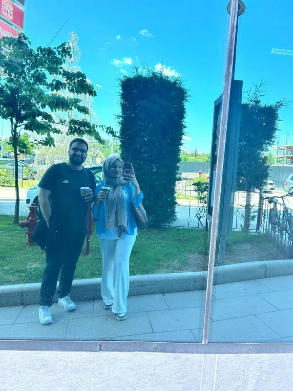
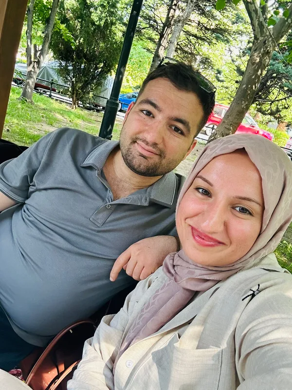
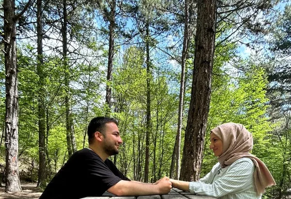

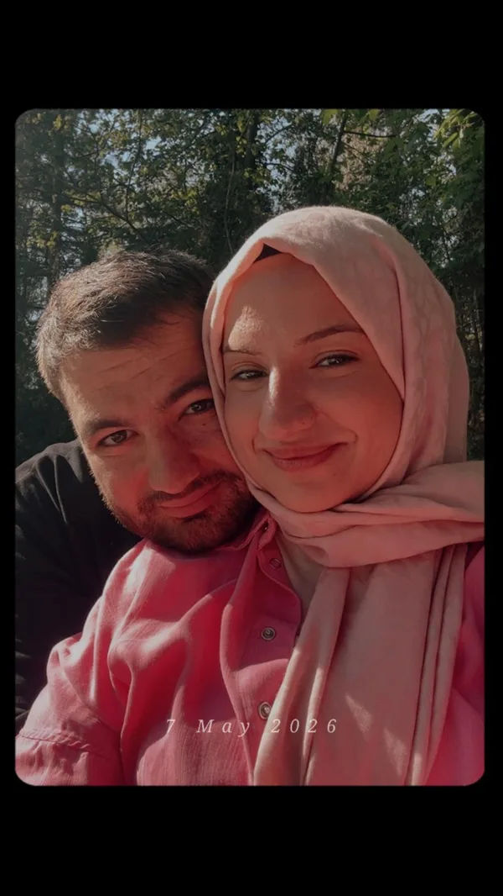
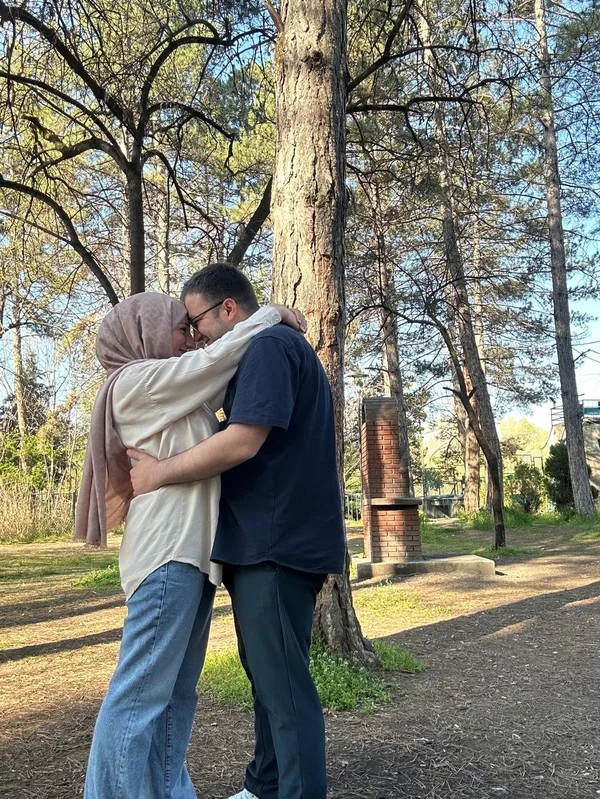
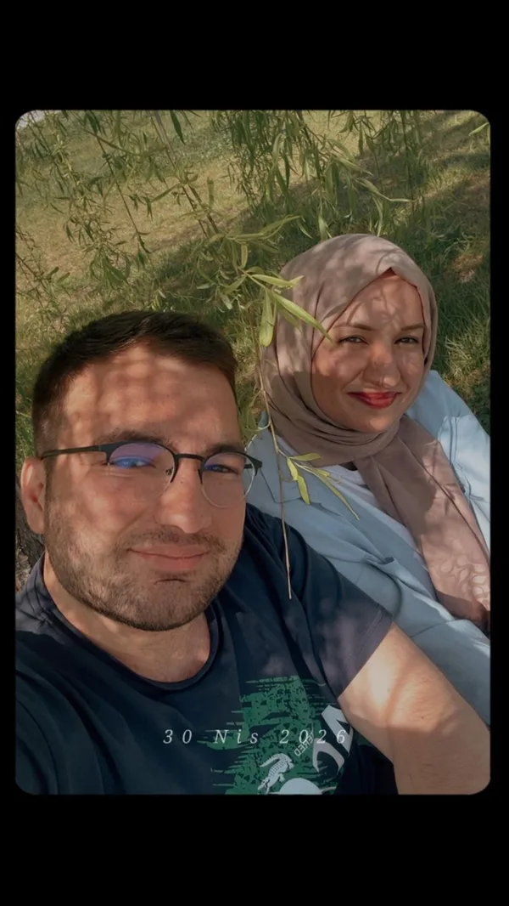
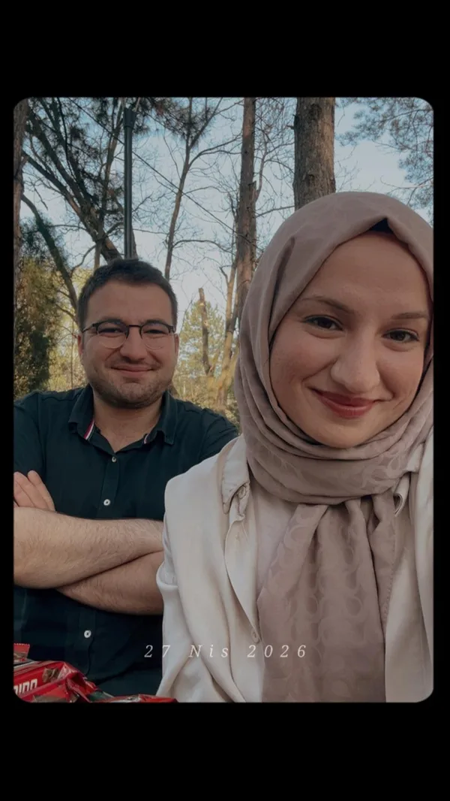

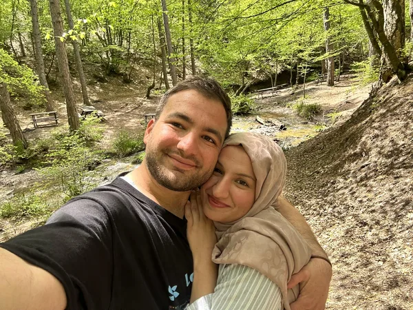
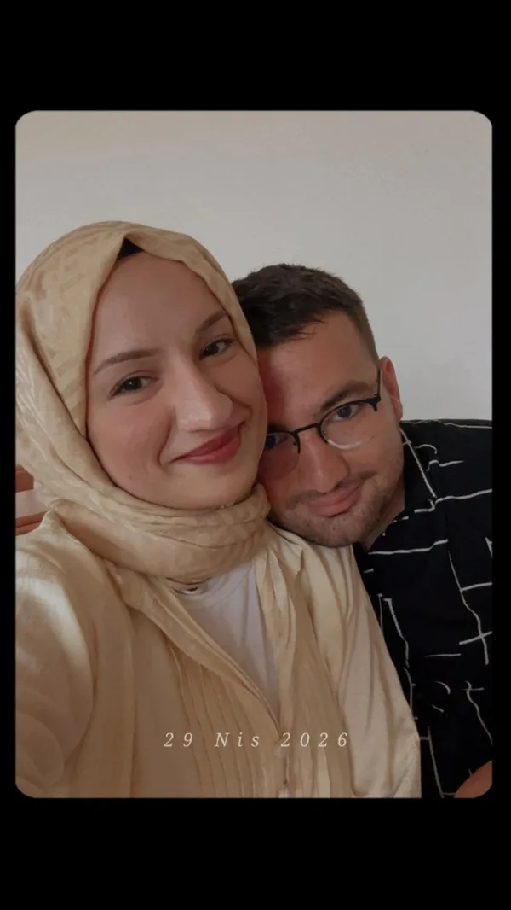
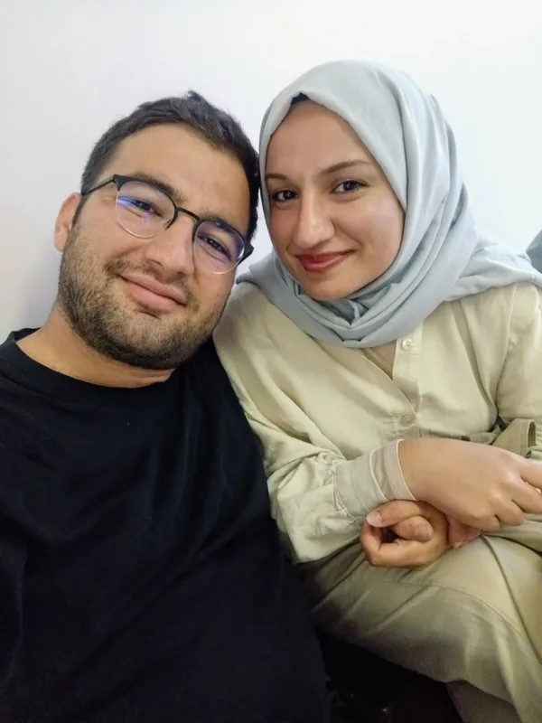
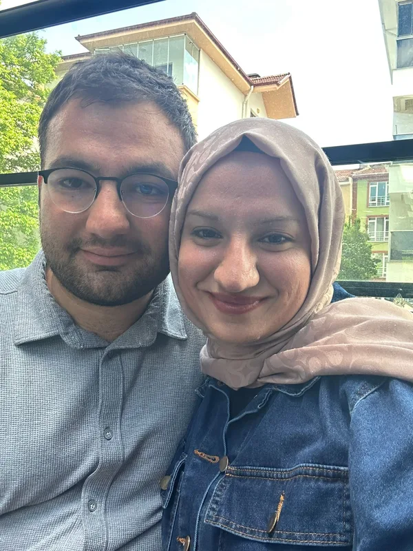
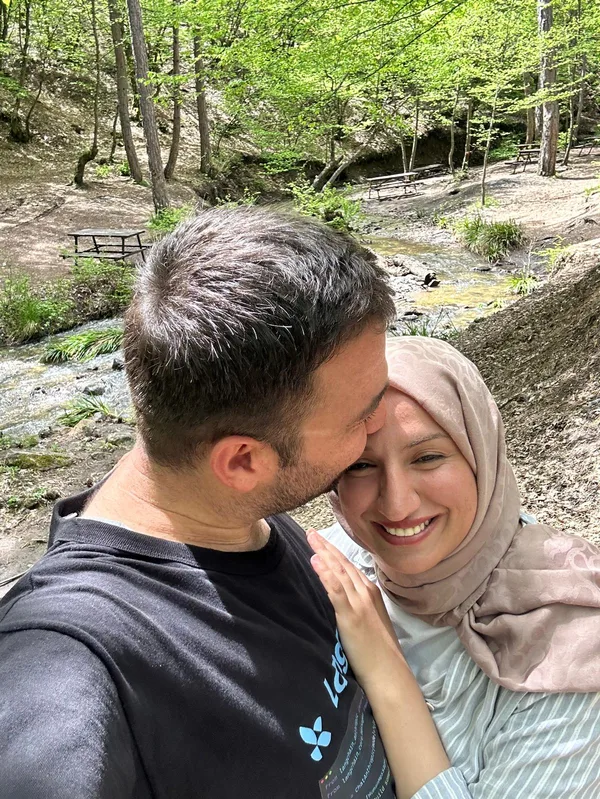
Bir Ayın Yolu
Otuz günü işaretleyen küçük duraklar...
23 Nisan
Kalbim ne olduğunu anlamadan çoktan sana çevrilmişti.
24 Nisan
Üç kelime söyledin, dünyam onlarla yeniden kuruldu.
2 Mayıs
Şehir ıslandı, ben sana sırılsıklam ve biz birbirimize sığındık.
8 Mayıs
Seninle o en özel anlarımız ne güzellikteydi.
21 Mayıs
Sana bakarak şarkı söylemek ayrı bir duyguydu.
22 Mayıs
Harika bir gün, senden aşık oldum lafını duymak...
Bölüm II
Kalbimde sakladığım üç küçük hazine.
Seni ilk gördüğüm an, dünya bir anlığına sustu. Sanki kalbim ne zamandır seni beklediğini ancak o saniyede hatırladı. O bakış, bütün yalnızlığımı bir kalemde sildi.
Saatlerce konuştuk, susmadık, susmak istemedik. Sözler bittiğinde gülüşlerimiz konuştu. O gece anladım ki seninle her sessizlik, bir başka şehirden gelen sıcak bir mektup gibi.
Otuz gün geçti ama sanki seninle hep vardım. Sabahların ışığı artık senin adınla doğuyor, geceler senin sesinle uyuyor. Bu bir ay, bana bir ömrün nasıl başladığını öğretti.
Bölüm III
İlk ayın otuz gününe yazılan dizeler...
I
aysel git başımdan ben sana göre değilim
hem kötüyüm karanlığım biraz çirkinim
…
aysel git başımdan seni seviyorum
II
Biliyor musun az az yaşıyorsun içimde
Oysaki seninle güzel olmak var
Örneğin rakı içiyoruz, içimize bir karanfil düşüyor gibi
Bir ağaç işliyor tıkır tıkır yanımızda
III
Terketmedi sevdan beni,
Aç kaldım, susuz kaldım,
Hayın, karanlıktı gece,
Can garip, can suskun,
Terketmedi sevdan beni...
IV
Her günü seninle tekrar tekrar yaşamak,
erimek yarını olmayan zamanlarda,
durdurmak bir yerde bütün saatleri,
kar yağarken çiçek açtırmak ağaçlara...
V
otuz gün saydım parmaklarımla
her sabah adını söyleyerek uyandım
takvimden yırtmadım hiçbirini
dursunlar istedim duvarda
bir gün geri okurum diye
Sevmek kimi zaman rezilce korkudur
İnsan bir akşam üstü ansızın yorulur
Tutsak ustura ağzında yaşamaktan
Kimi zaman ellerini kırar tutkusu
Birkaç hayat çıkarır yaşamasından
Hangi kapıyı çalsa kimi zaman
Arkasında yalnızlığın hınzır uğultusu
Fatihte yoksul bir gramafon çalıyor
Eski zamanlardan bir Cuma çalıyor
Durup köşe başında deliksiz dinlesem
Sana kullanılmamış bir gök getirsem
Haftalar ellerimde ufalanıyor
Ne yapsam ne tutsam nereye gitsem
Ben sana mecburum sen yoksun
Attila İlhan’ın bu şiiri sitenin ilk üç sayfasına ikişer kıta olarak bölündü. Ana sayfa, 1. ay ve 2. ay sırasıyla okunduğunda şiirin tamamı çıkıyor.
Bölüm IV
Kâğıdın üstüne döktüğüm kalbim...
Herşeyim,
Bugün tam bir ay oldu. Otuz gün önce hayatıma girdiğinde, dünyanın bana ne kadar büyük bir hediye verdiğini henüz bilmiyordum. Şimdi biliyorum: Sen, benim en sessiz duamın en güzel cevabısın.
Gülüşün, sabah kahvemden daha sıcak; sesin, en sevdiğim şarkıdan daha tanıdık. Seninle konuştuğumda zaman uzuyor, sustuğumda bile yanımdaymışsın gibi hissediyorum. Bir ayda bir ömür yaşadım seninle.
Sana söz veriyorum: Her sabah seni biraz daha çok seveceğim. Her gece, gökyüzünde bir yıldız sayacağım. Birini sana, birini bize, birini de bu güzel başlangıca.
Bu bir ay, sadece bir başlangıç. Önümüzde sayısız mevsim, sayısız sabah, sayısız "seni seviyorum" var. Ve ben hepsini, tek tek, seninle yaşamak istiyorum.
İyi ki varsın, iyi ki benimlesin. Seninle geçen her an, benim için bir mucize. Seni tanımak, sevmek ve seninle olmak, hayatımın en güzel serüveni. Daha nice güzel anılar, nice güzel günler, nice güzel yıllar bizim olsun. Seni seviyorum, her şeyim. İyi ki varsın, iyi ki benimlesin. O kadar anlatılmaz bir şey ki bu, kelimeler yetmez, ama ben yine de deniyorum: Seni seviyorum, Ebru. Her şeyim, hayatım, kalbim. Seninle sonsuzluğa giden bu yolda, el ele, göz göze, kalp kalbe yürümek istiyorum. Bir ayın sonunda, sana olan sevgim sadece büyüdü, derinleşti ve daha da güzelleşti. Sen benim en değerli hazinemsin, en güzel rüyamsın.
Sonsuz sevgiyle,
Furkan